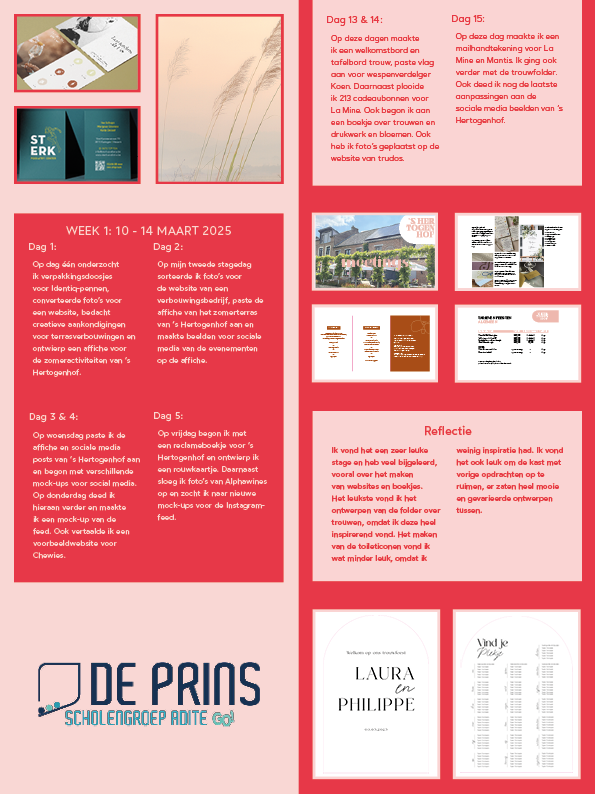
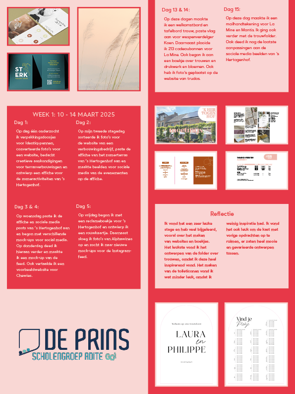
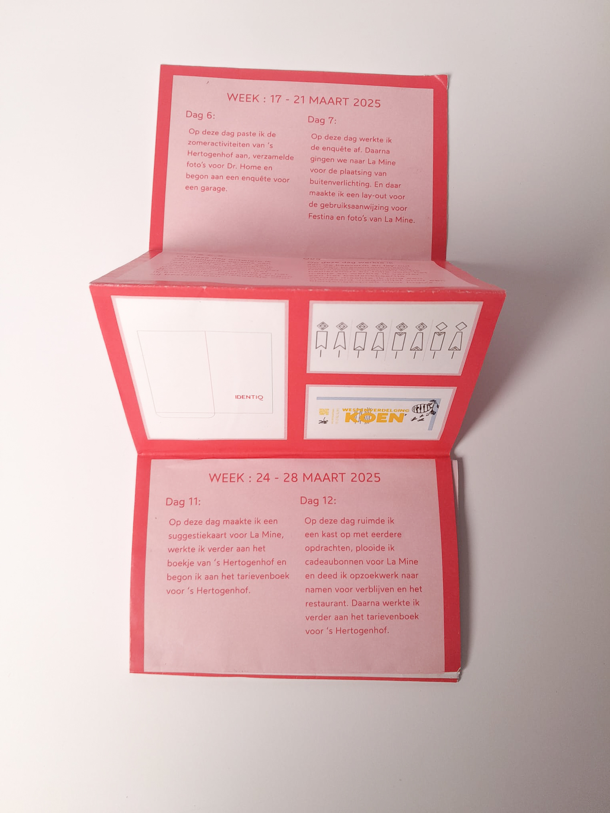
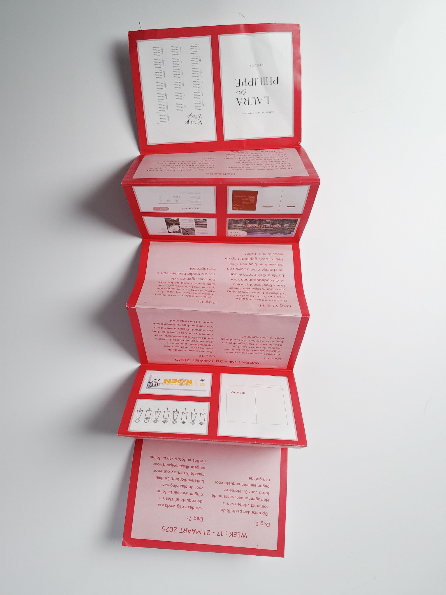
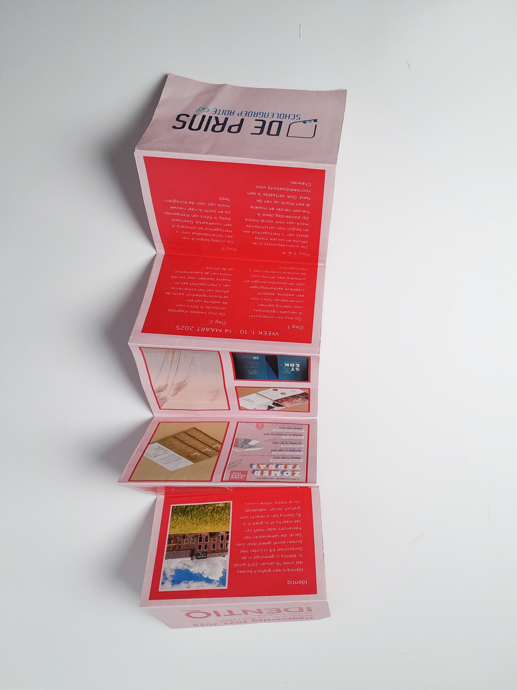
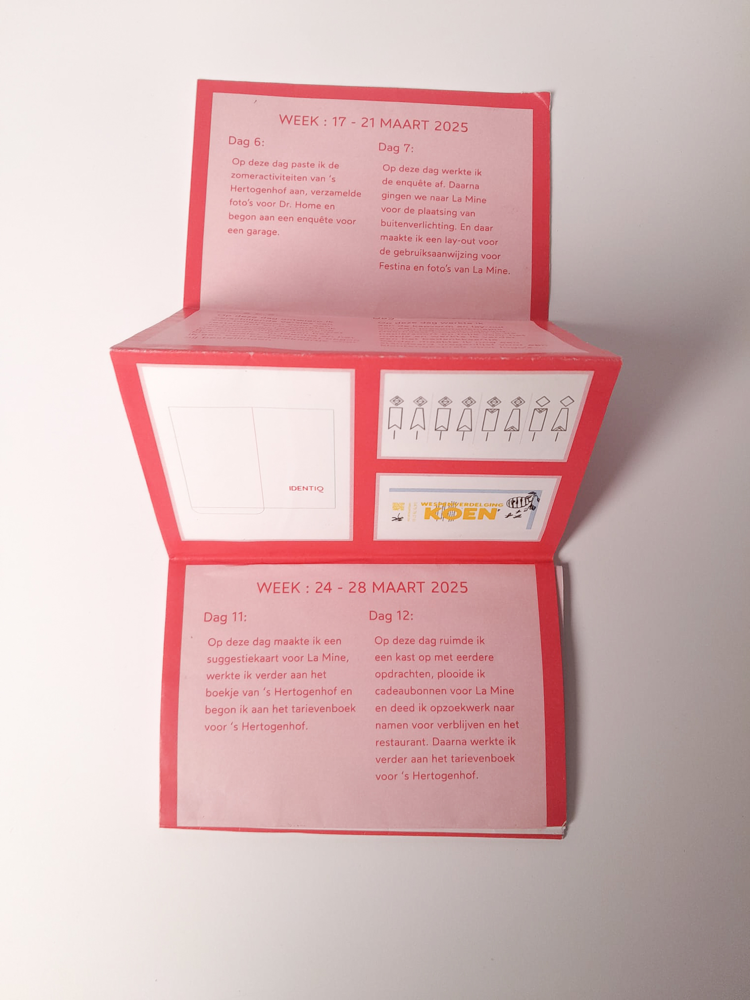
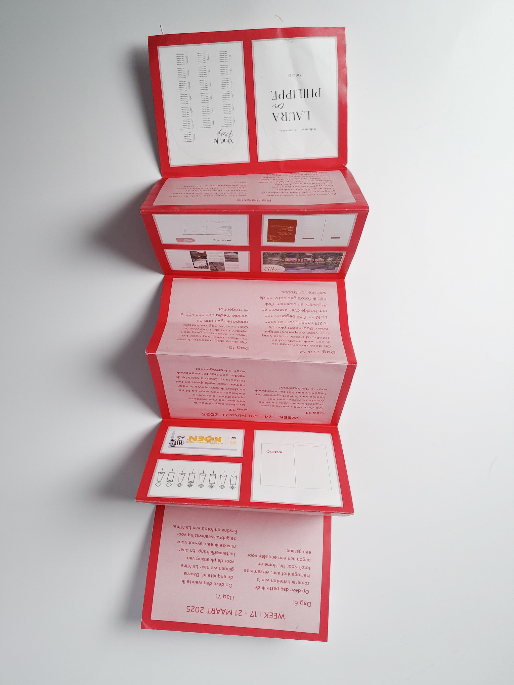
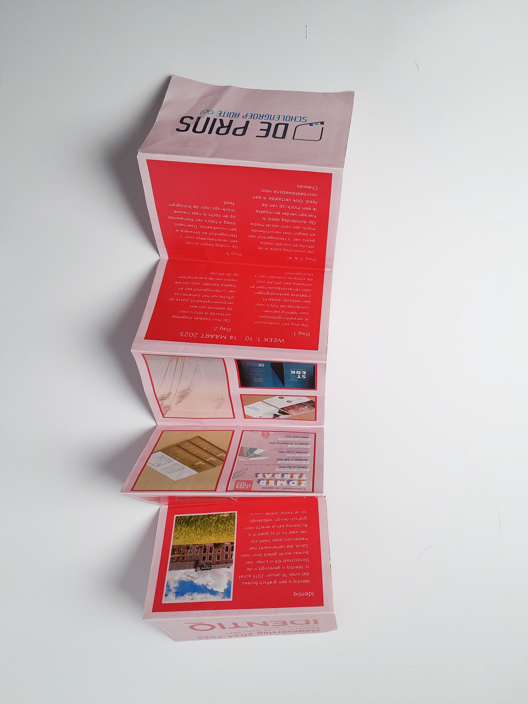

Stageverslag Identiq
Schoolopdracht – 2025
Tijdens mijn stage bij Identiq heb ik mijn stageverslag vormgegeven in Adobe InDesign. Bij het ontwerp heb ik bewust de huisstijl van Identiq gevolgd om het verslag een professionele uitstraling te geven. Daarnaast heb ik mijn stage-opdrachten dag per dag vastgelegd, waardoor het verslag een duidelijk en gestructureerd overzicht biedt van mijn opdrachten. Voor de afwerking heb ik gekozen voor een speciale plooiwijze gebaseerd op de eerste foto, omdat ik deze mooi vind en het een unieke uitstraling geeft. 03-2025

 


 




